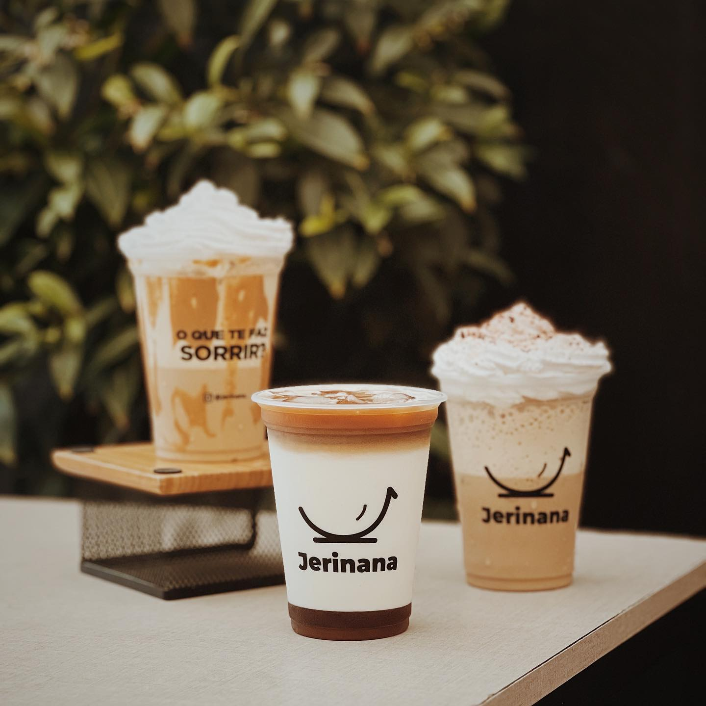
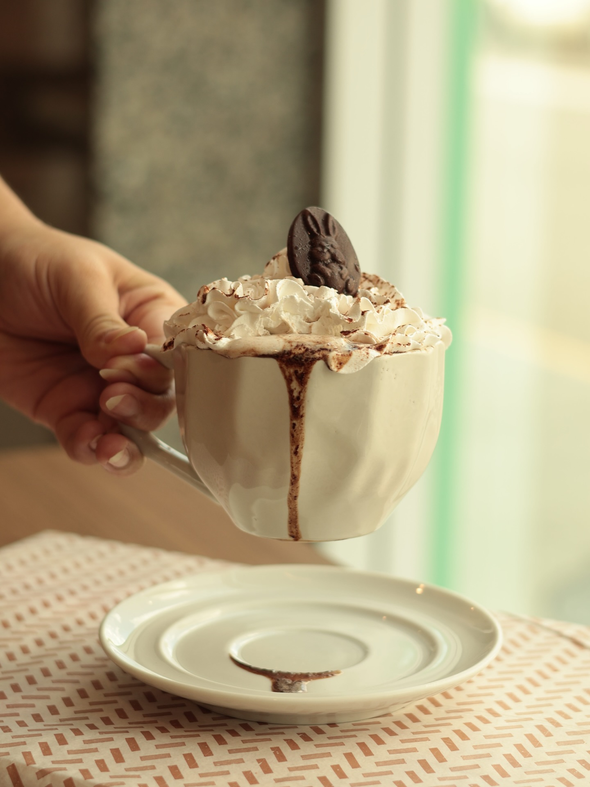
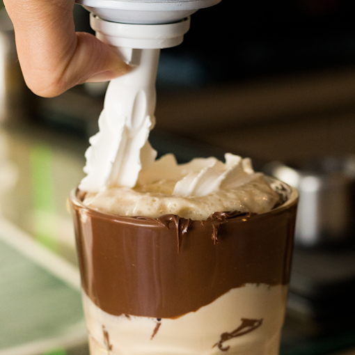
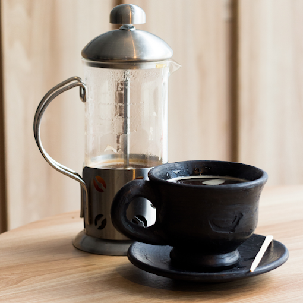
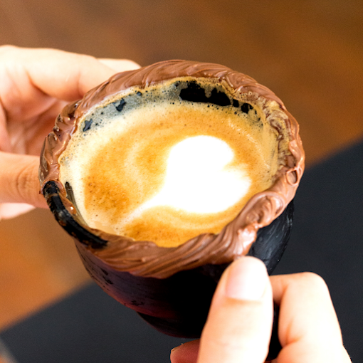
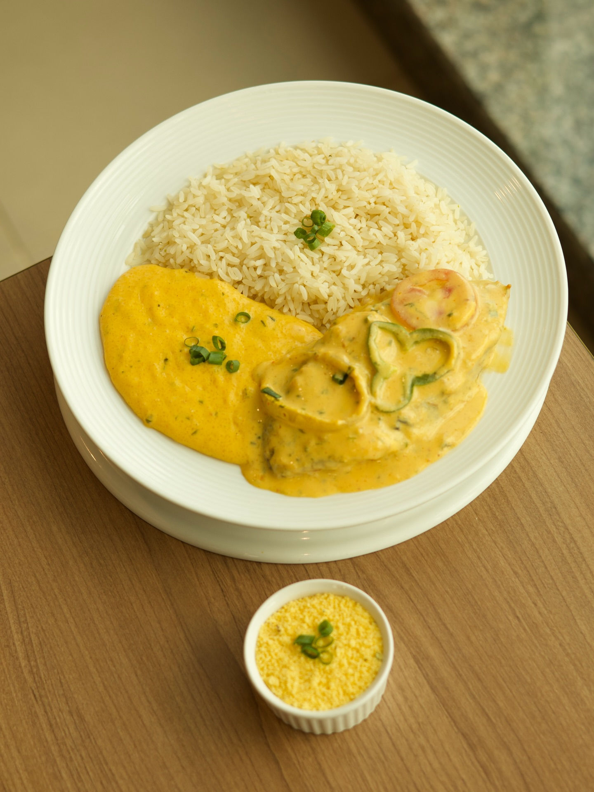
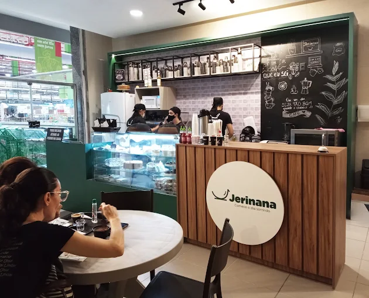

🏆 Eleita a Melhor Cafeteria de Caruaru
Grãos 100% arábica, receitas autorais e um ambiente feito para todas as gerações. Venha viver a experiência Jerinana.

Nossa história
A Jerinana nasceu do amor pelos grãos especiais e pelo desejo de criar um espaço onde cada xícara conta uma história. Somos um time de baristas felizes com um menu repleto de receitas autorais desenvolvidas especialmente para os paladares de Caruaru.
Do café coado no pano ao frappê artesanal, cada detalhe é pensado para que você viva uma experiência completa — do primeiro aroma ao último gole.

Nossos produtos




Onde estamos

O que dizem